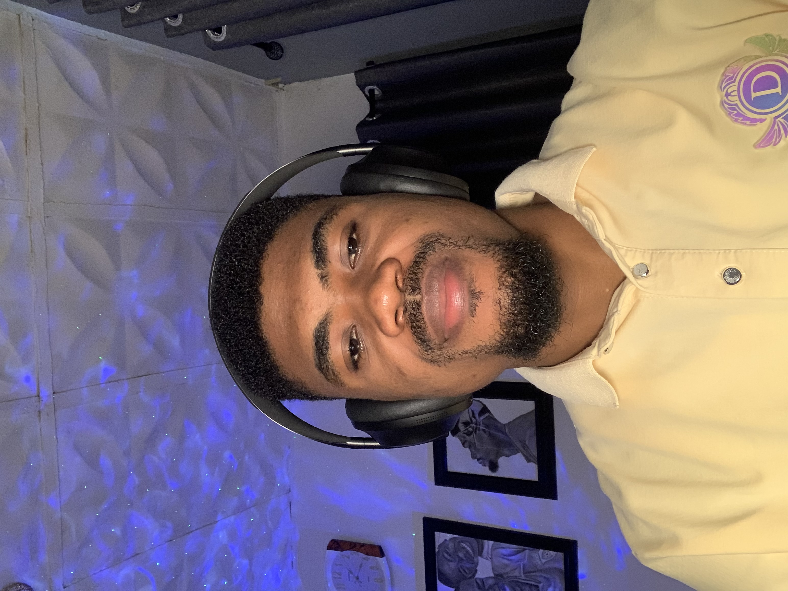

MY BIOGRAPHY
My name is Stanley Azi, I am a Computer Engineering undergraduate at Michael Okpara University of Agriculture, Umudike (MOUAU). I am a dedicated student eager to contribute my skills and learn from professionals related to my field of study. I am currently in my final year. My quest for better career building made me choose AltSchool Africa with the aim of buiding more and learning from experts whom I have seen their wonderful works in the tech space.
I am from Amata Mgbowo in Awgu LGA, Enugu State. I grew up in Plateau State where I completed my primary and secondary school. I got admitted to study computer engineering in Michael Okpara University of Agriculture, Umudike here in Abia state thereafter. I am a first born son of three sons whom without parents, have achieved a lot in life, breaking all odds in quest for my highest potential in life and my career.
I am a tech enthusiast whom is ready to associate with organisations and Tech Companies who are proactive and ready to solve the myriads of problems facing mankind in technology, health, education, agriculture, etc. I have been in the tech space for quiet a while now, and I have previous knowledge and experience in frontend development, blogging and UI/Graphic designs. I have also worked as a social media evaluator at appen. But my quest for higher limits in my career is the major reason I humbled myself to learn from Experts at AltSchool Africa for a better career which I am loving so far, thanks to the great work of our live class instructor, Setemi Ojo, and to Jerry Uke for the warm welcome and moderations until this stage. I am now convinced that choosing AltSchool Africa is the best decision I made this year.